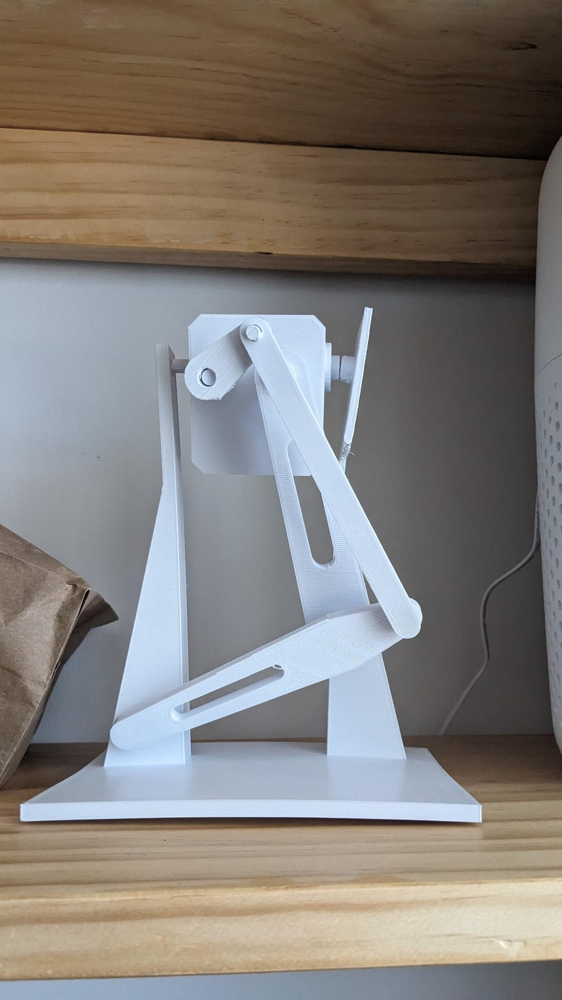

Testing a Leg

I designed a leg module that could be fully 3d printed and didn't require any external parts to build, in order to test if the 2 servos could mimic the motion I would want in real life. The test result was all good, and the design is functional for the leg module, and will be used going forwards. In the future, the stand for that leg will be printed at 100% size, unlike the one pictured.